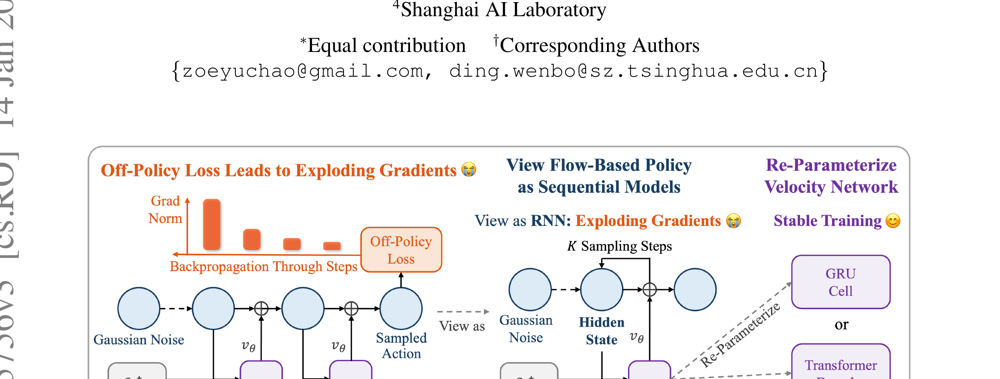

SAC Flow: Sample-Efficient Reinforcement Learning of Flow-Based Policies via Velocity-Reparameterized Sequential Modeling
Zhang 等 · Tsinghua / CMU / Li Auto · 2025 · arXiv:2509.25756 · Zotero XRY36VMF
核心不是把 SAC 名字贴到 flow 上，而是解决多步采样链的梯度病态，否则 off-policy 更新会发散。
§1 Introduction：作者为什么必须做这篇工作
Flow policy 能表达多峰连续动作，但一次动作要经过多步速度积分。把 SAC 的 Q 梯度穿过整条采样链时，这条链等价于深层残差 RNN，容易梯度爆炸或消失。过去很多方法因此改用蒸馏、代理目标或只在推理期引导。
作者把不稳定性归因到速度网络的参数化，而不是简单归因到“生成模型太复杂”。SAC Flow 用顺序建模思想重参数化速度，提出 gated velocity 的 Flow-G 与 decoded velocity 的 Flow-T，再用 noise-augmented rollout 让 off-policy critic 能端到端更新 flow actor。
展开原文 · 核心动机
“the flow rollout is algebraically equivalent to a residual recurrent computation”
§2 Related Work：它接在哪些路线之后
它把 Soft Actor-Critic 的高样本复用与 flow policy 的多模态表达结合起来。与 DPPO 把去噪步骤视为内部 MDP 不同，SAC Flow 保留环境层面的 off-policy replay；与 DSRL 只控制潜噪声不同，它直接更新速度场。
Flow Matching 原本用监督速度回归训练，梯度只走一步；RL 则必须通过最终动作的 Q 值回传到多步积分。论文借鉴门控 RNN/现代序列模型，让每一步速度更新具有受控残差通道。
§3 问题设定：状态、动作与反馈
状态输入 flow policy，噪声经多步速度积分成为动作；动作进入环境与 replay。critic 从 replay 学 Q，actor 通过重参数化采样链最大化 Q 与熵。
§4 方法总览：沿原图走一遍
上一节确定了学习接口；现在看论文原图，追踪观测如何变成动作、环境反馈又如何回到可训练模块。

1. 从噪声初始化一条动作生成轨迹
从简单噪声分布采样 $x_K$，它代表尚未成形的候选动作。后续每个 flow step 都在同一状态条件下移动它，因此一条动作的 Q 梯度必须穿过整段积分链。
输入是什么：已经采集的专家演示、机器人交互轨迹或评测样本。每条数据通常包含观测、动作，以及可能存在的奖励或下一状态。
这一步究竟做什么：从简单噪声分布采样 $x_K$，它代表尚未成形的候选动作。后续每个 flow step 都在同一状态条件下移动它，因此一条动作的 Q 梯度必须穿过整段积分链。
输出到哪里：一个或多个候选未来、动作或轨迹，以及必要的中间状态。这个结果会交给下一步“用 Flow-G 或 Flow-T 稳定每一步速度更新”继续处理。
为什么不能省略：随机起点允许模型表达多种合理结果；逐步生成则把无结构噪声限制到训练数据支持的动作或视频分布。
2. 用 Flow-G 或 Flow-T 稳定每一步速度更新
Flow-G 用门控速度、Flow-T 用 decoded velocity 重参数化残差更新，控制不同步的增益与记忆。目的不是改变最终 flow 目标，而是让多步链的 Jacobian 不再持续放大或压扁。
输入是什么：来自上一步“从噪声初始化一条动作生成轨迹”的产物：一个或多个候选未来、动作或轨迹，以及必要的中间状态。本步骤还会按论文设置读取当前条件、时间步或训练信号。
这一步究竟做什么：Flow-G 用门控速度、Flow-T 用 decoded velocity 重参数化残差更新，控制不同步的增益与记忆。目的不是改变最终 flow 目标，而是让多步链的 Jacobian 不再持续放大或压扁。
输出到哪里：参数得到更新的模型，或能供下一轮训练使用的新监督信号。这个结果会交给下一步“执行最终动作并写入 off-policy replay”继续处理。
为什么不能省略：前面的数据或分数本身不会自动改变模型；必须通过损失函数把误差信号变成参数更新。
3. 执行最终动作并写入 off-policy replay
积分得到最终动作后送入环境，奖励和下一状态写入 replay。noise-augmented rollout 保留探索，使历史转移能用于 off-policy critic，而不是每次更新都重新采样整批环境。
输入是什么：来自上一步“用 Flow-G 或 Flow-T 稳定每一步速度更新”的产物：参数得到更新的模型，或能供下一轮训练使用的新监督信号。本步骤还会按论文设置读取当前条件、时间步或训练信号。
这一步究竟做什么：积分得到最终动作后送入环境，奖励和下一状态写入 replay。noise-augmented rollout 保留探索，使历史转移能用于 off-policy critic，而不是每次更新都重新采样整批环境。
输出到哪里：可发送给机器人控制器的动作，以及执行后重新观测到的真实状态。这个结果会交给下一步“SAC critic 与 actor 交替更新，历史数据可反复使用”继续处理。
为什么不能省略：机器人动作会改变下一次观测；只有执行后重新读取现实，才能发现预测误差并阻止错误连续累积。
4. SAC critic 与 actor 交替更新，历史数据可反复使用
SAC critic 用 TD 学价值，actor 通过稳定的 flow 链最大化 Q 与熵。交替更新反复利用 replay；若去掉速度重参数化，同样的 Q 梯度会沿残差链爆炸，训练往往直接失稳。
输入是什么：来自上一步“执行最终动作并写入 off-policy replay”的产物：可发送给机器人控制器的动作，以及执行后重新观测到的真实状态。本步骤还会按论文设置读取当前条件、时间步或训练信号。
这一步究竟做什么：SAC critic 用 TD 学价值，actor 通过稳定的 flow 链最大化 Q 与熵。交替更新反复利用 replay；若去掉速度重参数化，同样的 Q 梯度会沿残差链爆炸，训练往往直接失稳。
输出到哪里：一个分数、奖励或价值估计，用来比较候选，而不是直接控制机器人。这是图中这条链路的最终产物，随后会进入真实执行、模型更新或指标评测。
为什么不能省略：只有生成候选而没有评价标准，模型不知道哪个结果更好；这一步把‘好坏’变成可比较的学习信号。
§5 机制细拆：为什么这个接口可能有效
环境回报先训练 Q，再由 Q 对最终动作的梯度穿过稳定的流轨迹分配到各速度步。
直接更新 flow velocity network；noise-augmented rollout 为训练提供可探索的随机性。
核心不是把 SAC 名字贴到 flow 上，而是解决多步采样链的梯度病态，否则 off-policy 更新会发散。
§6 目标函数：公式逐项读
下面的教学化表达抓住论文的主要更新方向；读它时不要只看符号，要检查回报作用在哪个变量、哪些部分保持冻结。
- $x_k$
- 第 $k$ 个流积分步的动作中间态。
- $v_\theta$
- 速度网络预测的移动方向。
- $g_k$
- 门控或解码产生的稳定系数，抑制残差链的爆炸。
- $\Delta t$
- 离散积分步长；步数与稳定性、延迟同时相关。
§7 训练与评测：数字在什么条件下成立
连续控制与机器人操作基准，覆盖从零训练和 offline-to-online 两种设置；关键对照包括原始 flow actor、蒸馏/代理目标以及常规 SAC policy。
| 学习接口 | 状态输入 flow policy，噪声经多步速度积分成为动作；动作进入环境与 replay。critic 从 replay 学 Q，actor 通过重参数化采样链最大化 Q 与熵。 |
|---|---|
| 信用分配 | 环境回报先训练 Q，再由 Q 对最终动作的梯度穿过稳定的流轨迹分配到各速度步。 |
| 更新范围 | 直接更新 flow velocity network；noise-augmented rollout 为训练提供可探索的随机性。 |
| 实验覆盖 | 连续控制与机器人操作基准，覆盖从零训练和 offline-to-online 两种设置；关键对照包括原始 flow actor、蒸馏/代理目标以及常规 SAC policy。 |
§8 结果怎么读：证据与归因
结果支持速度重参数化能稳定端到端 off-policy 训练，并在多项连续控制与操作任务上提升样本效率。最重要的消融不是最终均值，而是梯度范数、训练崩溃率与 Flow-G/Flow-T 对比。
§9 复现与工程检查
记录每层/每流步梯度范数；对齐相同 replay ratio、critic 网络与环境步数；分别报告 Flow-G、Flow-T、无门控基线和蒸馏基线。
- 先复现冻结的 SFT/BC 基线，再打开 RL 或偏好更新。
- 同时记录环境步、墙钟时间、人工干预、策略版本和推理延迟。
- 逐任务保存失败轨迹，避免平均成功率掩盖分布偏移。
§10 适用边界与研究启发
论文主要验证中等规模 flow policy；能否直接扩到数十亿参数 VLA、视觉编码器与真实机器人延迟仍需额外工程；SAC 的 critic 过估计问题并未消失。